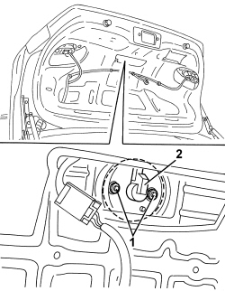

7055A81 ORNAMENT ON BOOT LID - R R
- Path
- Procedures > 70 FITTINGS > 7055 MOULDINGS AND PROTECTION > 7055A EXTERIOR MOULDINGS > 7055A81 ORNAMENT ON BOOT LID - R R
- Kind
- repair procedure (removal / refitting; the operation number is the code)
- Applies to
- all engines; all production periods
- Interactive page
- https://sloeber94.github.io/elrnDB/alfa/159/en/#/939011356
Applies to: all engines; all production periods
 Removing
Removing
 Refitting
RefittingOp. 7025B18 BOOT LID LINING - R+R
1. Undo the badge retaining nuts.
2. Working from outside the boot compartment, remove the badge.

Applies to: all engines; all production periods
Refitting
Removing- Check that the badge is not damaged.
- Position the badge.
- Tighten the nuts.